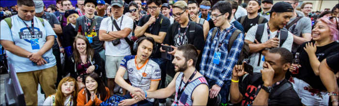

What is the Fighting Game Community
The fighting game community, often abbreviated to FGC, is a collective of video gamers who play fighting games such as Marvel vs. Capcom, Mortal Kombat, Soulcalibur, Street Fighter, Guilty Gear, The King of Fighters, Blazblue, Super Smash Bros., Tekken, Dead or Alive, Samurai Shodown, and many others. The fighting game community started out small in the late 1990s and throughout the 2000s referred to as the grassroots era, but it has grown to a larger scale in the 2010s, with many tournaments being held around the world. This is predominantly due to the rise of esports and digitized viewing habits on live streaming sites such as Twitch.
